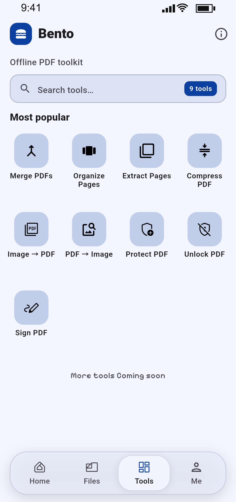
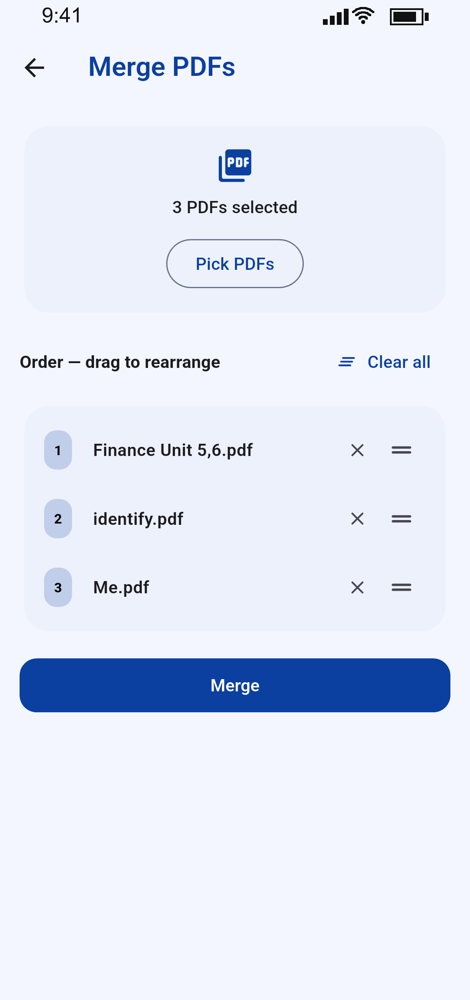
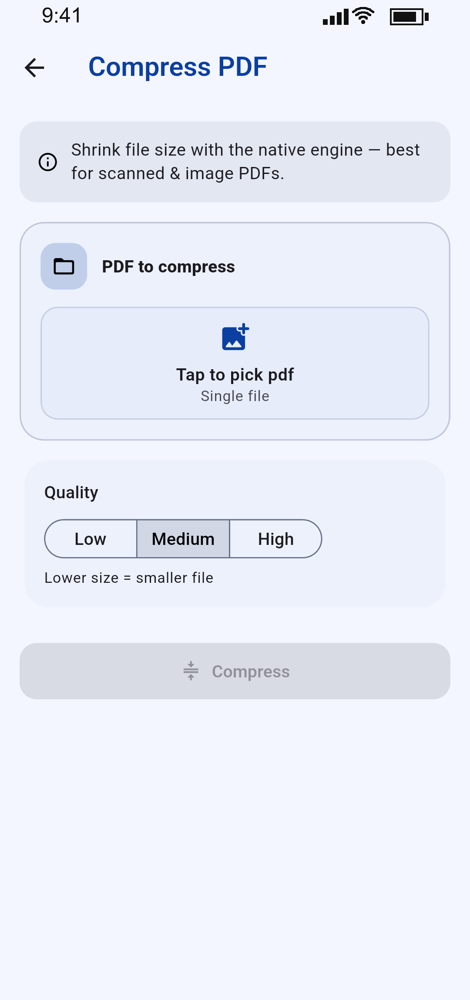
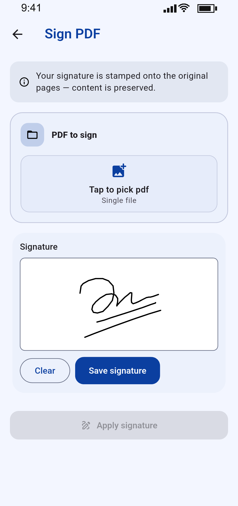
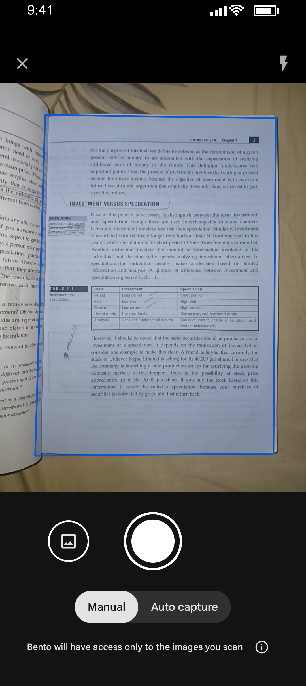
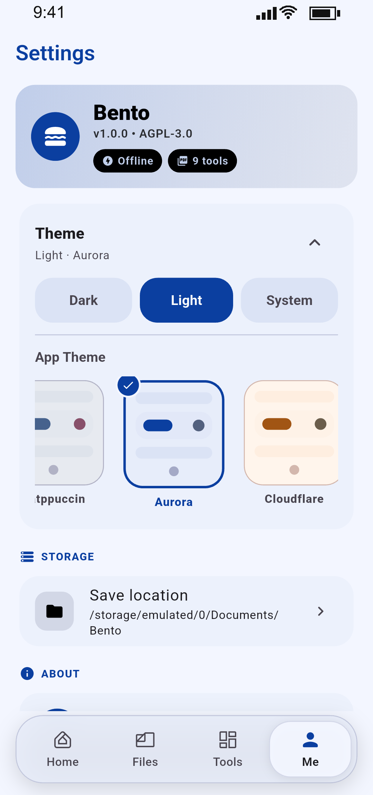

Works in airplane mode
Every engine module, font and asset is bundled at install time. Nothing is downloaded on first use — turn off Wi-Fi and everything still works.
Bento is a private, offline-first PDF toolkit and document scanner. Merge, split, organize, compress, convert, protect, unlock and sign — all processed on your device by a native engine. No accounts, no cloud, no tracking.

A native Flutter app with a native PDF engine. No browser tricks, no servers, no fine print.
Every engine module, font and asset is bundled at install time. Nothing is downloaded on first use — turn off Wi-Fi and everything still works.
No accounts, no sign-in, no analytics, no ads. Your PDFs never touch a server, because there is no server to touch.
Scan paper with automatic edge detection, crop and filters, review multi-page results, then save as PDF or send straight into another tool.
Material You dynamic colour, Catppuccin, Dracula, Nord, Gruvbox and more — with live previews and a system-following mode.
PDF processing runs on a MIT-licensed Rust core over FFI, off the main thread — so the interface stays smooth even on big files.
Results go straight to Documents/Bento by default — or any folder you choose — with previews before you save or share.
Everything runs locally, from a single file to a hundred-page batch.
Combine multiple PDFs into one document, in the order you choose.
Rotate, delete and reorder pages with a live thumbnail grid.
Pull selected pages out into a brand-new PDF.
Shrink file size with low, medium or high quality presets.
Turn photos and scanned images into a clean PDF.
Export any page as a high-quality PNG.
Password-protect documents with AES-256 encryption.
Remove password protection from files you own.
Draw a signature and stamp it on the page — fully native.



Real screenshots from Bento 1.0 · shown in light theme
Point, shoot, review. Bento detects the page edges, straightens the crop and cleans up the image — all on-device.

Bento has no network permission for its tooling, no telemetry and no hidden upload step. Read the full policy for the details.
From Material You dynamic colour to the classic palettes people love. Dark, light or follow the system.

No. Every tool processes files locally on your device. Bento doesn’t upload, sync or transmit your documents — there is no backend at all.
Neither. Install it, open it, use it. The app works fully offline, including the scanner and every PDF tool.
Android 7.0 (API 24) and newer, and iOS 13 and newer.
Yes. Bento is free and open source under AGPL-3.0. The complete source is published, and the app is built on open components such as the MIT-licensed pdf_manipulator engine.
Storage access to open and save your files, and camera access for the scanner — requested only when you tap Scan. No background access.
Email ashishdahal27@gmail.com with as much detail as you can — screenshots and the PDF that caused the issue help a lot.
Reach out directly — bug reports, feature requests and store enquiries are all welcome.
Typical reply time: within a couple of days. Please include your device model and OS version for app issues.